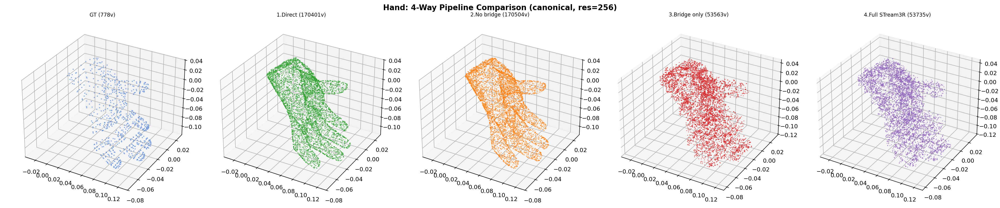
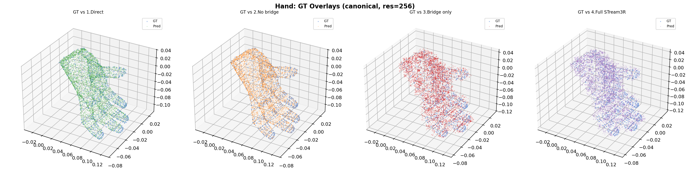

Isolating where quality degrades in the HOI3R pipeline
| Path | Pipeline | Latent Tokens | Pred Vertices | Status |
|---|---|---|---|---|
| 1. Direct Trellis.2 | GT mesh → seal → normalize → voxelize → reference encoder → reference decoder | 640 | 170,401 | Correct |
| 2. Phase2 no bridge | GT mesh → _encode_slot → raw latent → decoder (bypass token bridge) | 640 | 170,504 | Correct |
| 3. Bridge only | GT mesh → _encode_slot → input_proj (32→1024) → output_proj (1024→32) → decoder | 640 | 53,563 | Degraded |
| 4. Full STream3R | GT mesh → _encode_slot → input_proj → STream3R global_blocks → output_proj → decoder | 640 | 53,735 | Degraded (same as #3) |
_encode_slot (normalization, voxelization, encoding) is correct.
input_proj 32→1024 + output_proj 1024→32) distorts the latent features, causing the decoder to produce a degraded mesh (53K vs 170K vertices). This is expected — the bridge needs training.

Left to right: GT (778v), 1.Direct (170K), 2.No bridge (170K), 3.Bridge only (53K), 4.Full STream3R (53K). All in canonical space.

Left to right: GT vs Direct (aligned), GT vs No-Bridge (aligned), GT vs Bridge-Only (distorted), GT vs Full STream3R (distorted, same as bridge-only).
_encode_slot produces identical latents to the reference Trellis.2 pipeline (uniform normalization fix applied)sparse_resolution=256 produces 640 latent tokens; sparse_resolution=8 collapsed to 1 token (meaningless)